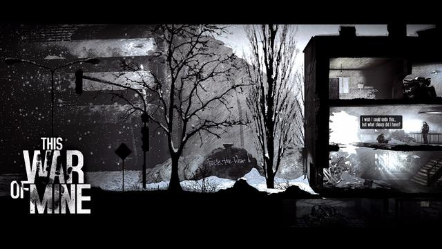
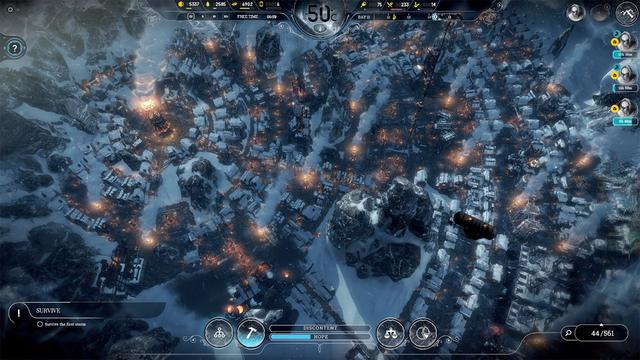
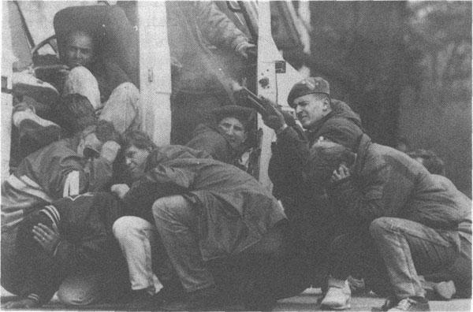
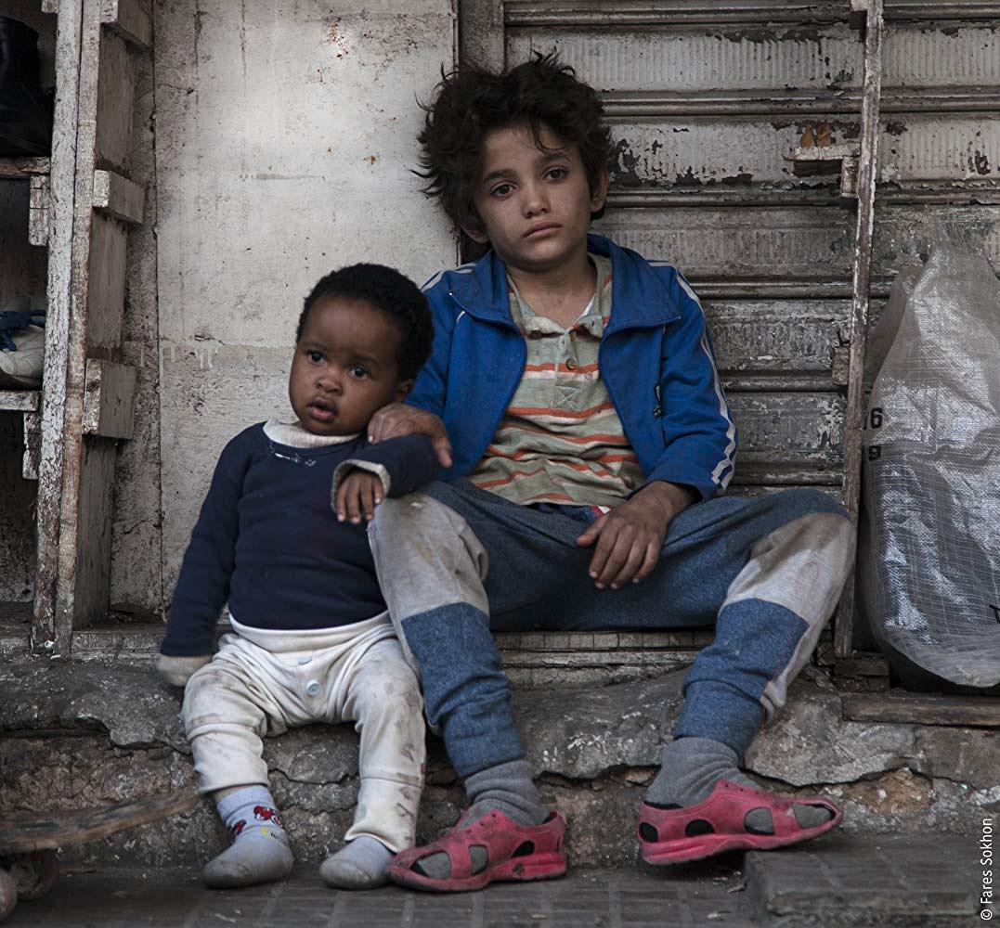

战争，是以目的性发动的，一切阴谋与布局都是为了索取利益，但背后往往要付出巨大代价才能获得。《这是我的战争》，字面意思可以理解为一个人的战斗，从中渗透进去才发现，原来这不是我的战争，而是一群人的生存。
《This War of Mine（这是我的战争）》是波兰游戏开发商11 Bit Studios制作的2d横版战争游戏，初玩时以为是生存类游戏，探索久了后才领悟出精髓：它是一款集合生存、养成、营救多样化的策略性沙盒游戏！自2014年11月14日以来，分别从PC移植到Android、IOS、Switch等众多平台，规模阵容不容小觑。游戏中没有恢宏磅礴的战场，也没有精彩华丽的战斗，但在某一方面确实值得称赞，具体消息必须从开发商说起。
以开发商角度去想，这才是精髓所在
11 bit studios S.A位于波兰华沙，成立至今不过9年时间，对比科乐美、卡普空的影响力和游戏资源，相差甚远。他们工作室秉持宁缺毋滥的态度，一直致力于精品游戏的研发，在bit studios眼中，中国的游戏市场相当有潜力，前景非常好。身为开发者和发行商，开发了《这是我的战争》和《冰汽时代》两款素质较好的游戏，让玩家爱不释手。 关于《冰汽时代（Frostpunk）》，定位上既是生存又是模拟建造类，和《这是我的战争》一样，游戏有极强的代入感。如果说前作没有吸引眼球的画质建模，那接触过《冰汽时代》后，你的思想该为之转变了。同一个开发商，制作出来的游戏其实有许多相似之处，最明显的莫过于背景和体验，从玩家的需求去看，轻松愉悦的游戏体验是最好不过的，但《这是我的战争》和《冰汽时代》太过于压抑，玩久了难免会出现不适的情绪。针对以上说法，我认为没从开发商原始角度去想。
对开发商来讲，这正是与其他游戏不同之处，无论影视剧亦或者音乐，从来都不止一个题材，必须与时俱进，还要引人深思！游戏产业在当今社会前景非常好，追随潮流之际，也要创造出新颖的题材。压抑类游戏一直层出不穷，《生化危机》和《寂静岭》延续至今，始终没摒弃它的精髓要点，抛开情怀，坚持信守的理念让它一步步成为焦点。凭什么卡普空能保留压抑感，Bit Studios就不能？
浅谈游戏背景与历史战役
《这是我的战争》事发于萨拉热窝围城战役，玩家在游戏里扮演的不是士兵而是平民，战火纷飞的时代，物资成了奢饰品，黄金钻石贬值严重，破烂不堪的住宅是他们唯一的避难所。提及萨拉热窝围城战役，有必要浅谈下，它是现代战争史上较长的围城战役，战乱一直持续了将近四年。从1992年4月5日至1996年2月29日，南斯拉夫人民军联合塞族共和国陆军发起了围城战，波斯尼亚和黑塞哥维那首都萨拉热窝成为事件焦点，波黑战争由此爆发。
这场战役超过斯大林格勒战役三倍，比列宁格勒战役还要长一年，历史上是仅次于第二次世界大战的屠杀战役。二战的背景令人惊心怵目，战争横跨61个国家，波及20亿人口，相当惨烈。
《这是我的战争》建立在萨拉热窝围城战的基础上，以“生存”为主题，“养成”为辅佐，描绘出人性的丑陋。实际上二者都重要，看你如何抉择，如果你擅长偷盗和欺骗，那物资在后期取之不尽，一旦选择了苟活，注定会沦为养成游戏。
道德与良知重要吗，这是个问题。电影《何以为家》以真实案例，阐述出人格、道德、良知以及尊严地位等问题，一位12岁的小男孩在法院上控诉亲生父母，并告知所有人：因为他们生了我！一句话直击心灵，值得我们全世界的父母深思。为人父母，不仅仅是以生育为目的，如果你不具备扶养问题，还请不要让孩子来到世间，任由社会无情的糟蹋！
